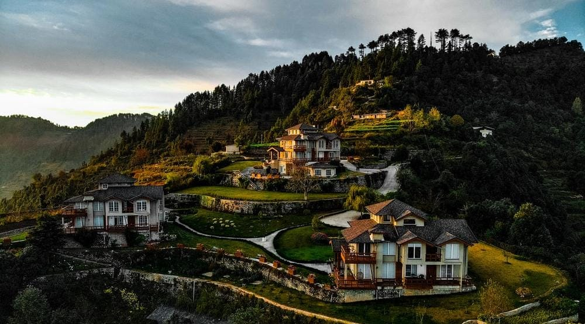

About Mussoorie
Mussoorie is a hill station and a municipal board in the Dehradun district of the Indian state of Uttarakhand. It is about 35 kilometres (22 mi) from the state capital of Dehradun and 290 km (180 mi) north of the national capital of New Delhi. The hill station is in the foothills of the Garhwal Himalayan range. The adjoining town of Landour, which includes a military cantonment, is considered part of "greater Mussoorie", as are the townships of Barlowganj and Jharipani.Mussoorie is at an average altitude of 2,005 metres (6,578 ft). To the northeast are the Himalayan snow ranges, and to the south, the Doon Valley and Shiwalik ranges. The second highest point is the original Lal Tibba in Landour, with a height of over 2,275 m (7,464 ft). Mussoorie is popularly known as The Queen of the Hills.A captivating paradise for leisure travellers,it is a perfect summer resort. Located on a 15-km-long horseshoe ridge with the grand Himalayas as a backdrop, Mussoorie spreads across at a height of 2,000 m above sea level. From this vantage point, it offers scenic views of Himalayas peaks in Western Garhwal.Many famous personalities have made Mussoorie their home – most notable being authors Ruskin Bond and Bill Aitken. Filmstar Victor Banerjee resides in Mussoorie while deceased filmstar Tom Alter was born and brought up here. In the 1960s filmstar Prem Nath had his house here while the son of Dev Anand studied in Woodstock school. Cricketers Sachin Tendulkar and Mahendra Singh Dhoni are frequent visitors to this hill resort.Mussoorie A descent trip could be done in 6–7k/person. This could include travel in a direct Volvo bus from Kashmere gate and stays in descent hotel which could range from 1000–1500 per night. One could manage to cover all local sight seeing places in and near mussorie and grab food at the popular places in Mussorie.